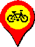
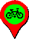

<!DOCTYPE html>
<html>
 <head>
  <meta charset="utf-8">
  <meta name="google" value="notranslate">
  <meta name="viewport" content="width=device-width,initial-scale=1">
  <link rel="manifest" href="my_manifest.json">
  <title>交通地圖</title>
  <link rel="icon" href="192.png">
  <link rel="apple-touch-icon" href="192.png">
  <link crossorigin="anonymous" rel="stylesheet" href="https://unpkg.com/leaflet/dist/leaflet.css">
  <script crossorigin="anonymous" src="https://unpkg.com/leaflet/dist/leaflet.js"></script>
  <!--<link crossorigin="anonymous" rel="stylesheet" href="https://cdn.orgs.live/Leaflet.awesome-numbered-marker/leaflet_awesome_number_markers.css">-->
  <link crossorigin="anonymous" rel="stylesheet" href="./leaflet_awesome_number_markers.css">

  <link crossorigin="anonymous" rel='stylesheet' href="https://unpkg.com/maplibre-gl/dist/maplibre-gl.css">
  <script crossorigin="anonymous" src="https://unpkg.com/maplibre-gl@5.0.0/dist/maplibre-gl.js"></script>
  <script crossorigin="anonymous" src="https://unpkg.com/@maplibre/maplibre-gl-leaflet/leaflet-maplibre-gl.js"></script>

  <style>
   #mapDiv{position:absolute;width:100%;height:100%;top:0px;left:0px}
   button{vertical-align:middle}
   .iconColor{background-color:#ff8000;border:2px #ff8000 solid;vertical-align:middle}
   .iconBike{width:24px}.iconCar{width:24px}
   .leaflet-control{border:2px black solid}
   .filter{filter:brightness(0.58) contrast(9)}
  </style>
 </head>
 <body style="overflow:hidden">
  <div id="mapDiv"></div>
  <script crossorigin="anonymous" src="https://unpkg.com/leaflet-canvas-marker"></script>
  <!--<script crossorigin="anonymous" src="https://cdn.orgs.live/Leaflet.awesome-numbered-marker/leaflet_awesome_number_markers.js"></script>-->
  <script crossorigin="anonymous" src="./leaflet_awesome_number_markers.js"></script>
  <script crossorigin="anonymous" src="https://unpkg.com/leaflet-polylinedecorator"></script>
  <script crossorigin="anonymous" src="https://unpkg.com/crypto-js/crypto-js.js"></script>
  <script src="./leaflet-triangle-marker.js"></script><!--2021/7/27加入，可顯示方向光標-->
  <script>
addEventListener('load',function(){
 navigator.serviceWorker.register('sw.js')
//.then(function(reg){console.log('sw.js執行的範圍:'+reg.scope)})//看這支sw.js執行範圍
//.catch(function(err){console.log('error:',err)})
//↓附上刪除sw.js的寫法
/*navigator.serviceWorker.getRegistrations()
.then(function(reg){
for(var reg of reg)
{reg.unregister()}
})*/
})
var mapJson,jsonUrl='https://www.googleapis.com/drive/v3/files/1EG8-IkWAPTiP_GwwDr0tsjEu8Hp33RxO?alt=media&.png'//故意加&.png，使其快取
            ,mjpg16='https://www.googleapis.com/drive/v3/files/1bFWa4-Sys39hCXneKAdoRPUrsfy60eH5?alt=media'
            ,mjpg17='https://www.googleapis.com/drive/v3/files/1i3B9uUW9fMmZMMN8r77bwL0A2mrkRGOl?alt=media'
           ,mjpg18A='https://www.googleapis.com/drive/v3/files/1SD5kv-52YRgMoyQX7Py_rV-A8dulN-Pk?alt=media'
           ,mjpg18B='https://www.googleapis.com/drive/v3/files/1UQKx7pJ5YjwbnjZlrBnyPLugjJazXV3w?alt=media'
           ,mjpg18C='https://www.googleapis.com/drive/v3/files/17APAqQ_NbAWdMMjD7mFBt4f5i8hbJCzP?alt=media'
           ,mjpg18D='https://www.googleapis.com/drive/v3/files/1B91QPrQ_9kmY5mFWP9_-IoP6QJ5cCZ-g?alt=media'
var head=atob('/9j/4AAQSkZJRgABAgAAAQABAAD/2wBDAAYEBQYFBAYGBQYHBwYIChAKCgkJChQODwwQFxQYGBcUFhYaHSUfGhsjHBYWICwgIyYnKSopGR8tMC0oMCUoKSj/2wBDAQcHBwoIChMKChMoGhYaKCgoKCgoKCgoKCgoKCgoKCgoKCgoKCgoKCgoKCgoKCgoKCgoKCgoKCgoKCgoKCgoKCj/wAARCAEAAQADASIAAhEBAxEB/8QAHwAAAQUBAQEBAQEAAAAAAAAAAAECAwQFBgcICQoL/8QAtRAAAgEDAwIEAwUFBAQAAAF9AQIDAAQRBRIhMUEGE1FhByJxFDKBkaEII0KxwRVS0fAkM2JyggkKFhcYGRolJicoKSo0NTY3ODk6Q0RFRkdISUpTVFVWV1hZWmNkZWZnaGlqc3R1dnd4eXqDhIWGh4iJipKTlJWWl5iZmqKjpKWmp6ipqrKztLW2t7i5usLDxMXGx8jJytLT1NXW19jZ2uHi4+Tl5ufo6erx8vP09fb3+Pn6/8QAHwEAAwEBAQEBAQEBAQAAAAAAAAECAwQFBgcICQoL/8QAtREAAgECBAQDBAcFBAQAAQJ3AAECAxEEBSExBhJBUQdhcRMiMoEIFEKRobHBCSMzUvAVYnLRChYkNOEl8RcYGRomJygpKjU2Nzg5OkNERUZHSElKU1RVVldYWVpjZGVmZ2hpanN0dXZ3eHl6goOEhYaHiImKkpOUlZaXmJmaoqOkpaanqKmqsrO0tba3uLm6wsPExcbHyMnK0tPU1dbX2Nna4uPk5ebn6Onq8vP09fb3+Pn6/9oADAMBAAIRAxEAPwA=')//Base64編碼轉字串
var bytes=new Uint8Array(623);for(let i=0;i<623;i++){bytes[i]=head.charCodeAt(i)};head=new Blob([bytes.buffer])
var token,auth
var tokenFlag=authFlag=mjpgFlag=true
caches.has('mjpg').then(function(hasCache){if(!hasCache){mjpgFlag=false}})
fetch('https://call-oa.onrender.com/twoTokens?format=JSON').then(res=>res.text()).then(data=>{data=data.split('\n');token=data[0];auth=data[1]})//token無Bearer;auth有Bearer
var getToken=function(x,y,z,fun){if(!tokenFlag){setTimeout(()=>{getToken(x,y,z,fun)},1000);return}
 if(token){fun(x,y,z);return}
 tokenFlag=false
 let xhr=new XMLHttpRequest()
 xhr.open("GET","https://call-oa.onrender.com/twoTokens?format=JSON")
 xhr.responseType='text'
 xhr.send()
 xhr.onload=function(){token=xhr.response.split('\n')[0];tokenFlag=true;getToken(x,y,z,fun)}
}
//var bike2length=0//2022/10/22加入，用來計算arr陣列之前面YouBike 2.0站點數量，已改用arr[25]故註解
var enableFlag=true,busFlag=true,mapOnPopup=false,clickFlag=false,oldUrl=''//oldUrl可避免手機重複讀取借還車數目兩次
var markersLayer=L.layerGroup()
var linesLayer=L.layerGroup()
var busLayer=L.layerGroup()
var linesJSON={},arr=[];for(let i=0;i<=38;i++){arr.push([])}
//var RouteData={}//分析某路線第n項之所有資料

function addOnHoverListener(data){
 if(!enableFlag){enableFlag=true;map.closePopup()}//2021/8/15加入，讓按滑鼠右鍵顯示的點位消失
 if(!mapOnPopup)
 {mapOnPopup=true//2021.1.28加入，可避免連續請求及popup
  if(data[0].data.options.url)
  {
   var url=data[0].data.options.url
   oldUrl=url//oldUrl可避免手機重複讀取借還車數目兩次
   var xhr=new XMLHttpRequest();xhr.responseType="json"//設定回傳資料為json格式，預設為text
   //var GMTString=new Date().toGMTString()
   //var hash=CryptoJS.HmacSHA1("x-date: "+GMTString,"WkgNgfNV6MGI0QDKsnVySbECWF0").toString(CryptoJS.enc.Base64)
   xhr.open('GET',url,true)//預設就是true(異步)
   if(url.indexOf('onrender')==-1){
    //xhr.setRequestHeader('Authorization','hmac username="bf8cbf088c7a4473939368430b5fdb68", algorithm="hmac-sha1", headers="x-date", signature="'+hash+'"')
    //xhr.setRequestHeader('x-date',GMTString)
    xhr.setRequestHeader('Authorization','Bearer '+token)
   }
   xhr.send()
   xhr.onerror=function(){L.popup({autoPan:false}).setLatLng(data[0].data._latlng).setContent(data[0].data._popup._content).openOn(map)}
   xhr.onload=function()
   {
    if(xhr.status!=200){token='';getToken(xhr,url,null,function(a,b){a.open('GET',b,true);a.setRequestHeader('Authorization','Bearer '+token);a.send()});return}
    oldUrl=''//oldUrl可避免手機重複讀取借還車數目兩次
    var obj=xhr.response
    var msg='可借：'+obj[0].AvailableRentBikes+'，可停：'+obj[0].AvailableReturnBikes
    let eyb=obj[0].available_spaces_detail&&obj[0].available_spaces_detail.eyb
    if(eyb){msg+='<br>'+'電動：'+eyb}//2022/10/10加入可借電動車數量
    if(eyb&&data[0].data.canvas_img.src.indexOf("2.png")!=-1){let tmp=document.createElement("img");tmp.setAttribute('src','單車站E.png');data[0].data.canvas_img=tmp;ciLayer.redraw()}//電動車從無→有，變更icon圖示，2022/10/16加入
    else if(!eyb&&data[0].data.canvas_img.src.indexOf("E.png")!=-1){let tmp=document.createElement("img");tmp.setAttribute('src','單車站2.png');data[0].data.canvas_img=tmp;ciLayer.redraw()}//電動車從有→無，變更icon圖示，2022/10/16加入
    L.popup({autoPan:false}).setLatLng(data[0].data._latlng).setContent(data[0].data._popup._content+'<br>'+msg).openOn(map)
   }
  }
  else{L.popup({autoPan:false}).setLatLng(data[0].data._latlng).setContent(data[0].data._popup._content).openOn(map)}
 }
}

var map=L.map('mapDiv',{preferCanvas:true,zoomControl:false})
         .on('click',
             function(){
                        enableFlag=true;//document.documentElement.requestFullscreen()
                      //2021.1.30改成contextmenu
                      //if(!busFlag)
                      //{
                       //setTimeout(function(){//setTimeout可讓map_click做的事，晚於marker_popupopen做的事；原本事件順序為：map_click-->marker_popupopen
                                             //linesLayer.clearLayers();markersLayer.clearLayers()
                                             //ciLayer.addMarkers(arr);busFlag=true
                                             //if(lastMarker)
                                             //{
                                              //var tmp=map.getCenter()
                                              //L.popup().setLatLng([lat,lon]).setContent(lastMarker).openOn(map)
                                              //map.setView(tmp)
                                              //enableFlag=false
                                             //}
                                            //},0)
                      //}
                       }
            )
         .on('contextmenu',//contextmenu按滑鼠右鍵
             function(e){
                         linesLayer.clearLayers();markersLayer.clearLayers()
                         if(busFlag)
                         {map.addLayer(svvLayer)//2022/4/5街景層控制
                          iconColor.forEach((ele)=>{ele.style.display='none';if(ele.style.borderColor!='gray'){handle(ele,true)}});ciLayer.redraw()//arr.forEach(ele=>{ele.forEach(ele=>{ciLayer.removeMarker(ele)})})//for(var i in arr){ciLayer.removeMarker(arr[i])};ciLayer.redraw()
                          busFlag=false
                         }
                         else//2021.1.30改成contextmenu
                         {map.removeLayer(svvLayer)//2022/4/5街景層控制
                          iconColor.forEach((ele)=>{ele.style.display='inline';if(ele.style.borderColor!='gray'){handle(ele)}})//arr.forEach(ele=>{ciLayer.addMarkers(ele)})//ciLayer.addMarkers(arr)
                          busFlag=true
                          enableFlag=false
                          /*if(lastMarker)
                          {
                           L.popup({autoPan:false}).setLatLng([lat,lon]).setContent(lastMarker).openOn(map)
                         //var tmp=map.getCenter();L.popup().setLatLng([lat,lon]).setContent(lastMarker).openOn(map);map.setView(tmp)
                           enableFlag=false
                          }*/
                         }
                         var latlng=e.latlng.toString().replace(/LatLng\(|\s/g,'').slice(0,-1)
                         L.popup({autoPan:false}).setLatLng(e.latlng).setContent("<a href='https://www.google.com/maps?layer=c&cbll="+latlng+"' target='_blank'>"+latlng+"</a>").openOn(map)
                        }
            )
         .on("dblclick",
             function(){
                        if(lastMarker){L.popup({autoPan:false}).setLatLng([lat,lon]).setContent(lastMarker).openOn(map);map.setView([lat,lon],zoom);enableFlag=false}
                       }
            )
         .on("popupopen",function(){mapOnPopup=true})
         .on("popupclose",function(){mapOnPopup=false
                                     setTimeout(()=>{!busFlag&&!mapOnPopup&&map.removeLayer(svvLayer)},0)//有公車點位狀態且此時popupopen，按滑鼠右鍵會先busFlag==false，接著popupclose立刻再popupopen，所以先延遲一下再判斷是否最後真的是持續popupclose才移除街景層
                                    })//2022/4/5街景層控制
         .addLayer(busLayer).addLayer(linesLayer).addLayer(markersLayer)
map.doubleClickZoom.disable()
document.getElementById("mapDiv").onmousemove=function(){if(enableFlag&&busFlag&&mapOnPopup&&this.style.cursor!='pointer'){map.closePopup()}}
var lastMarker,lat,lon,zoom
//var lastMarker,lat=24.108077,lon=120.5979,zoom=16
document.getElementsByClassName('leaflet-control-attribution leaflet-control')[0].innerHTML=' '+' '+' '+
                                                                                            ' '+' '+' '+
                                                                                            ' '+' '+
                                                                                            '<button>否</button> <button onclick="centerGPS()">位</button> <a href="./zip.html" target="_blank"><input type="button" style="vertical-align:middle" value="zip"></a>'

document.getElementsByTagName('button')[0].onclick=function(){
 if(this.innerText=='否'){this.innerText='是';clickFlag=true}else{this.innerText='否';clickFlag=false}
}

let iconColor=document.querySelectorAll('.iconColor')
iconColor.forEach((item)=>{item.onclick=function(){
                           if(this.style.borderColor=='gray'){this.style.borderColor=this.style.backgroundColor='#ff8000'}else{this.style.borderColor=this.style.backgroundColor='gray'}
                           handle(this);if(this.style.borderColor=='gray'){ciLayer.redraw()}
                                                  }
                          })

function handle(ele,flag){//^是XOR運算，原理：相同回傳0、相異回傳1，當flag為undefined不影響前面判斷，但flag為true會使前面判斷取NOT
 let a,b,key=decodeURI(ele.src).split('/').pop()
 switch(key){
  case "單車站1.png":a=24;b=24;break
  case "單車站2.png":a=25;b=25;break
  case "單車站3.png":a=26;b=26;break
  case "bus_00ff00.png":a=0;b=21;break
  case "bus_0000ff.png":a=22;b=22;break
  case "bus_ffff00.png":a=23;b=23;break
  case "火車站.png":a=27;b=29;break
  case "捷運站.png":a=30;b=38;break
  default:console.log('其他')
 }
 for(let i=a;i<=b;i++){
  if(ele.style.borderColor=='gray'^flag){
   arr[i].forEach(item=>{ciLayer.removeMarker(item)})
  }
  else{if(key=='單車站2.png'){update()};ciLayer.addMarkers(arr[i])}
 }
}

var watchID,posLat,posLon

function centerGPS(){
//navigator.geolocation.clearWatch(watchID)
 map.setView([posLat,posLon])
}

navigator.geolocation.getCurrentPosition(
async function(pos){
//gps=L.circleMarker([pos.coords.latitude,pos.coords.longitude],{radius:10,weight:2,color:'#ff0000',fillColor:'#00ff00'}).addTo(map)
gps=L.triangleMarker([pos.coords.latitude,pos.coords.longitude],{
                                                               /*renderer:L.canvas(),*/ //your canvas renderer(default: L.canvas())
                                                                 rotation:0,//triangle rotation in degrees (default: 0)
                                                                 width:50,//width of the base of triangle (default: 24)
                                                                 height:50,//height of triangle (default: 24)
                                                                 color:'red',
                                                               //stroke:false,//是否畫邊框？
                                                                 weight:1,//邊框粗細？
                                                                 fill:false,//是否塗色？
                                                               //fillColor:'yellow',
                                                               //fillOpacity:0.2//default:0.2
                                                                }).addTo(map)
map.setView([pos.coords.latitude,pos.coords.longitude],16)

//addEventListener('deviceorientation',function(e){
addEventListener('deviceorientationabsolute',function(e){
//e.alpha,e.beta,e.gamma
gps.setRotation(180-e.alpha)
})

watchID=navigator.geolocation.watchPosition(function(pos){
 posLat=pos.coords.latitude;posLon=pos.coords.longitude
 gps.setLatLng([posLat,posLon])
//map.setView([pos.coords.latitude,pos.coords.longitude])
 },null,{enableHighAccuracy:true})

ciLayer=L.canvasIconLayer({}).addTo(busLayer)
ciLayer.addMarker(L.marker([0,0]))//先添加1虛擬marker，實驗結果：ciLayer中marker不可為空，否則滑鼠一開始move會出現錯誤於console
ciLayer.addOnHoverListener(function(e,data){addOnHoverListener(data)})
//maxNativeZoom:請求伺服器之最大{Z}，maxZoom:操作放大地圖之最大{Z}
//L.tileLayer('http://mt.google.com/vt/lyrs=m&x={x}&y={y}&z={z}',{attribution:'縣市公車:綠、公路客運:藍、台灣好行:黃　',maxNativeZoom:22,maxZoom:30}).addTo(map)

var extend=L.TileLayer.extend({options:{/*minZoom:16,minNativeZoom:16,*/maxNativeZoom:18,maxZoom:30},
 /*getTileUrl:function(coords){
                             var i = Math.ceil( Math.random()*4)
                             return `https://mt.google.com/vt/lyrs=m&x=${coords.x}&y=${coords.y}&z=${coords.z}?image=`+i
                            }*/
 createTile:function(coords,done){
  const img=document.createElement('img')
  if(coords.z<16){img.className='filter';numapsTile()}
  else{getTile()}
  function numapsTile(){
   let n=Math.pow(2,coords.z),grmn=[]
   for (let i=0;i<coords.z;i++){
    n/=2
    const xx=parseInt(coords.x/n),yy=parseInt(coords.y/n)
    if(xx==1&&yy==0){grmn[i]="/g"}
    else if(xx==0&&yy==0){grmn[i]="/r"}
    else if(xx==0&&yy==1){grmn[i]="/m"}
    else if(xx==1&&yy==1){grmn[i]="/n"}
    coords.x%=n;coords.y%=n
   }
   img.src="https://maptile.garmin.com.tw/numaps/latest"+grmn.join('')+'.png'
   img.onload=()=>done(null,img)
  }//numapsTile()
  function getTile(){if(!authFlag){setTimeout(getTile,100);return}
   const extendXhr=new XMLHttpRequest()
   let mjpgUrl
   if(!(mapJson[coords.z][coords.x]&&mapJson[coords.z][coords.x][coords.y])){coords={z:16,x:54962,y:28075}}
   switch(coords.z){
    case 16:mjpgUrl=mjpg16;break
    case 17:mjpgUrl=mjpg17;break
    default:if(coords.x<=218913){mjpgUrl=mjpg18A}//Z18，min:217108、max:219914
       else if(218914<=coords.x&&coords.x<=219145){mjpgUrl=mjpg18B}
       else if(219146<=coords.x&&coords.x<=219402){mjpgUrl=mjpg18C}
       else if(219403<=coords.x){mjpgUrl=mjpg18D}
   }
   if(mjpgFlag){extendXhr.open('GET',mjpgUrl+`&all`,true)}
   else{extendXhr.open('GET',mjpgUrl+`&z${coords.z}x${coords.x}y${coords.y}`,true)}
   extendXhr.setRequestHeader('Authorization',auth)
   extendXhr.setRequestHeader('Range',`bytes=${mapJson[coords.z][coords.x][coords.y][0]}-${mapJson[coords.z][coords.x][coords.y][1]}`)
   extendXhr.responseType='blob'
   extendXhr.send()
   extendXhr.onload=()=>{
    if(extendXhr.status==401)
    {
     if(authFlag){
      authFlag=false
      const jsonXhr=new XMLHttpRequest()
    //jsonXhr.open('GET','https://script.google.com/macros/s/AKfycbwC42_mTmRl9XV5KTrWbU9o2mjAHJC3X_xj2VqEld9iLkGdrrQXI75xQ81V4hlEY473gA/exec?node&format=JSON',true)//讀delicadiesel@gmail.com資料庫的node工作表，故意加&format=JSON使快取
      jsonXhr.open('GET','https://call-oa.onrender.com/twoTokens?format=JSON',true)
      jsonXhr.send()
      jsonXhr.onload=()=>{
       auth=jsonXhr.response.split('\n').pop();authFlag=true;getTile()}
     }//if
     else{getTile()}
    }
    else{img.src=URL.createObjectURL(new Blob([head,extendXhr.response]));done(null,img)}
   }
  }//getTile()
  return img
                                 }
                              })
  const jsonXhr=new XMLHttpRequest()
//jsonXhr.open('GET','https://script.google.com/macros/s/AKfycbwC42_mTmRl9XV5KTrWbU9o2mjAHJC3X_xj2VqEld9iLkGdrrQXI75xQ81V4hlEY473gA/exec?node&format=JSON',true)//讀delicadiesel@gmail.com資料庫的node工作表，故意加&format=JSON使快取
//jsonXhr.open('GET','https://call-oa.onrender.com/twoTokens?format=JSON',true)
//jsonXhr.send()
//jsonXhr.onload=()=>{
 //auth=jsonXhr.response.split('\n').pop()
  if(!auth){//應該不會執行，因為一開始就有fetch取得twoTokens
   const res=await fetch('https://call-oa.onrender.com/twoTokens?format=JSON')
   auth=(await res.text()).split('\n')[1]
  }
  map.createPane('top')
  map.getPane('top').style.zIndex=650//等高線置頂
  map.getPane('top').style.pointerEvents='none'//若將圖塊放在其他地圖圖層之上，會造成圖塊將捕獲點擊和觸摸，可設定none避免，並解決showLine時，滑鼠靠近不能顯示各站訊息
//資料來源：https://leafletjs.com/examples/map-panes/
  L.maplibreGL({
   pane:'top',
   style:{
  "version": 8,
  "name": "MapLibre",
  "sources": {
    "contours": {
      "type": "vector",
      "tiles": ["https://wbjon.github.io/contours/{z}/{x}/{y}.txt"],
      "minzoom": 9,
      "maxzoom": 14
    }
  },
  "glyphs": "https://demotiles.maplibre.org/font/{fontstack}/{range}.pbf",
  "layers": [
    {
      "id": "contour-lines",
      "type": "line",
      "source": "contours",
      "source-layer": "contour",
      "paint": {
        "line-color": "Maroon",
        "line-opacity": 0.5,
        "line-width": ["match", ["get", "nth_line"], 10, 1.5, 5, 1, 0.5]
      }
    },
    {
      "id": "contour-labels",
      "type": "symbol",
      "source": "contours",
      "source-layer": "contour",
      "layout": {
        "text-field": "{height}",
        "text-size": 10,
        "symbol-spacing": 120,
        "symbol-placement": "line"
      },
      "paint": {"text-opacity": 0.8, "text-color": "#000000"}
    }
  ],
  "id": "gekug9i"
     }//style
}).addTo(map)

  jsonXhr.open('GET',jsonUrl,true)
  jsonXhr.responseType='json'
  jsonXhr.setRequestHeader('Authorization',auth)
  jsonXhr.send()
  jsonXhr.onload=()=>{
   mapJson=jsonXhr.response
   new extend().addTo(map)//2023/9/18將後者改為前者//L.tileLayer('https://mt.google.com/vt/lyrs=m&x={x}&y={y}&z={z}',{maxNativeZoom:22,maxZoom:30}).addTo(map)
  }
//}
//svvLayer=L.tileLayer('https://mt.google.com/vt/lyrs=svv&x={x}&y={y}&z={z}&style=40,18',{maxNativeZoom:22,maxZoom:30})//.addTo(map)//2022/4/5加入街景層
  svvLayer=L.tileLayer('https://maps.googleapis.com/maps/vt?pb=!1m5!1m4!1i{z}!2i{x}!3i{y}!4i256!2m8!1e2!2ssvv!4m2!1scb_client!2sapiv3!4m2!1scc!2s*211m3*211e3*212b1*213e2*211m3*211e2*212b1*213e2!3m3!3sUS!12m1!1e68!4e0',{maxNativeZoom:22,maxZoom:30})//.addTo(map)//2023/9/8改新街景層
  makeKML4()
},null,{enableHighAccuracy:true})

function showLine(RouteUID,n)
{
 if(!clickFlag){return}
 linesLayer.clearLayers()//清除所有linesLayer Group的資料
 iconColor.forEach((ele)=>{ele.style.display='none';if(ele.style.borderColor!='gray'){handle(ele,true)}});ciLayer.redraw()//for(var i in arr){ciLayer.removeMarker(arr[i])};ciLayer.redraw()
 busFlag=false
 var polyline=L.polyline(linesJSON[RouteUID][n],{color:'red'}).addTo(linesLayer)
 L.polylineDecorator(polyline,{patterns:[{repeat:25,
                                          symbol:L.Symbol.arrowHead({pixelSize:15,
                                                                     polygon:false,
                                                                     pathOptions:{stroke:true,color:'black'}
                                                                    })
                                         }]
                              }
                    ).addTo(linesLayer)
//{offset:[0,-30]} 2021/8/14加入，將數字marker的popup位置上移，解決發生over事件，馬上又out事件，造成地圖會閃爍！另外，一併解決數字marker被popup覆蓋
  L.popup({autoPan:false,offset:[0,-30]}).setLatLng([lat,lon]).setContent(lastMarker).openOn(map)
//var tmp=map.getCenter();L.popup({offset:[0,-30]}).setLatLng([lat,lon]).setContent(lastMarker).openOn(map);map.setView(tmp)
 for(var i in linesJSON[RouteUID][n])
 {
  L.marker(linesJSON[RouteUID][n][i].slice(0,2),{icon:new L.AwesomeNumberMarkers({number:Number(i)+1,markerColor:"blue"})}).addTo(markersLayer)
   .bindPopup(linesJSON[RouteUID][n][i][2],{autoPan:false})
   .on('mouseover',function(){//{offset:[0,-30]} 2021/8/14加入，將數字marker的popup位置上移，解決發生over事件，馬上又out事件，造成地圖會閃爍！另外，一併解決數字marker被popup覆蓋
                              L.popup({autoPan:false,offset:[0,-30]}).setLatLng(this._latlng).setContent(this._popup._content).openOn(map)
                              //var tmp=map.getCenter();L.popup({offset:[0,-30]}).setLatLng(this._latlng).setContent(this._popup._content).openOn(map);map.setView(tmp)
                             })
   .on('mouseout',function(){//{offset:[0,-30]} 2021/8/14加入，將數字marker的popup位置上移，解決發生over事件，馬上又out事件，造成地圖會閃爍！另外，一併解決數字marker被popup覆蓋
                             L.popup({autoPan:false,offset:[0,-30]}).setLatLng([lat,lon]).setContent(lastMarker).openOn(map)
                             //var tmp=map.getCenter();L.popup({offset:[0,-30]}).setLatLng([lat,lon]).setContent(lastMarker).openOn(map);map.setView(tmp)
                            })
 }
}

setInterval(()=>{//2022/10/23加入，每分鐘更新YouBike 2.0圖示(電動 或 非電動)
 if(!document.hidden){update()}//若頁面沒有隱藏，才update()
},60000)
document.onvisibilitychange=function(){if(document.visibilityState=='visible'){update()}}//頁面從隱藏變可見，立即update()

function update(){
 let xhr=new XMLHttpRequest();xhr.responseType="json"
 xhr.open('GET','https://call-oa.onrender.com/E',true)//預設就是true(異步)，https://call-oa.onrender.com/E 呈現有電動車的站點名稱陣列資料
 xhr.send()
 xhr.onload=()=>{//xhr.response是陣列
  for(let i in arr[25])//=0;i<bike2length;i++)
  {
   delete arr[25][i].canvas_img//當前畫面一定有.canvas_img，要先刪除它，redraw()時，就會調用.iconUrl圖檔
   if(xhr.response.includes(arr[25][i].options.url.split('%27')[1])){arr[25][i].options.icon.options.iconUrl='單車站E.png'}else{arr[25][i].options.icon.options.iconUrl='單車站2.png'}
  }
  ciLayer.redraw()
 }
}

function makeKML4(){
makeKML('https://call-oa.onrender.com/https://tdx.transportdata.tw/api/basic/v2/Bus/StopOfRoute/City/Keelung?$format=JSON','基隆市',0)
makeKML('https://call-oa.onrender.com/https://tdx.transportdata.tw/api/basic/v2/Bus/StopOfRoute/City/Taipei?$format=JSON','台北市',1)
makeKML('https://call-oa.onrender.com/https://tdx.transportdata.tw/api/basic/v2/Bus/StopOfRoute/City/NewTaipei?$format=JSON','新北市',2)
makeKML('https://call-oa.onrender.com/https://tdx.transportdata.tw/api/basic/v2/Bus/StopOfRoute/City/Taoyuan?$format=JSON','桃園市',3)
makeKML('https://call-oa.onrender.com/https://tdx.transportdata.tw/api/basic/v2/Bus/StopOfRoute/City/HsinchuCounty?$format=JSON','新竹縣',4)
makeKML('https://call-oa.onrender.com/https://tdx.transportdata.tw/api/basic/v2/Bus/StopOfRoute/City/Hsinchu?$format=JSON','新竹市',5)
makeKML('https://call-oa.onrender.com/https://tdx.transportdata.tw/api/basic/v2/Bus/StopOfRoute/City/MiaoliCounty?$format=JSON','苗栗縣',6)
makeKML('https://call-oa.onrender.com/https://tdx.transportdata.tw/api/basic/v2/Bus/StopOfRoute/City/Taichung?$format=JSON','台中市',7)
makeKML('https://call-oa.onrender.com/https://tdx.transportdata.tw/api/basic/v2/Bus/StopOfRoute/City/ChanghuaCounty?$format=JSON','彰化縣',8)
makeKML('https://call-oa.onrender.com/https://tdx.transportdata.tw/api/basic/v2/Bus/StopOfRoute/City/NantouCounty?$format=JSON','南投縣',9)
makeKML('https://call-oa.onrender.com/https://tdx.transportdata.tw/api/basic/v2/Bus/StopOfRoute/City/YunlinCounty?$format=JSON','雲林縣',10)
makeKML('https://call-oa.onrender.com/https://tdx.transportdata.tw/api/basic/v2/Bus/StopOfRoute/City/ChiayiCounty?$format=JSON','嘉義縣',11)
makeKML('https://call-oa.onrender.com/https://tdx.transportdata.tw/api/basic/v2/Bus/StopOfRoute/City/Chiayi?$format=JSON','嘉義市',12)
makeKML('https://call-oa.onrender.com/https://tdx.transportdata.tw/api/basic/v2/Bus/StopOfRoute/City/Tainan?$format=JSON','台南市',13)
makeKML('https://call-oa.onrender.com/https://tdx.transportdata.tw/api/basic/v2/Bus/StopOfRoute/City/Kaohsiung?$format=JSON','高雄市',14)
makeKML('https://call-oa.onrender.com/https://tdx.transportdata.tw/api/basic/v2/Bus/StopOfRoute/City/PingtungCounty?$format=JSON','屏東縣',15)
makeKML('https://call-oa.onrender.com/https://tdx.transportdata.tw/api/basic/v2/Bus/StopOfRoute/City/YilanCounty?$format=JSON','宜蘭縣',16)
makeKML('https://call-oa.onrender.com/https://tdx.transportdata.tw/api/basic/v2/Bus/StopOfRoute/City/HualienCounty?$format=JSON','花蓮縣',17)
makeKML('https://call-oa.onrender.com/https://tdx.transportdata.tw/api/basic/v2/Bus/StopOfRoute/City/TaitungCounty?$format=JSON','台東縣',18)
makeKML('https://call-oa.onrender.com/https://tdx.transportdata.tw/api/basic/v2/Bus/StopOfRoute/City/LienchiangCounty?$format=JSON','連江縣',19)
makeKML('https://call-oa.onrender.com/https://tdx.transportdata.tw/api/basic/v2/Bus/StopOfRoute/City/KinmenCounty?$format=JSON','金門縣',20)
makeKML('https://call-oa.onrender.com/https://tdx.transportdata.tw/api/basic/v2/Bus/StopOfRoute/City/PenghuCounty?$format=JSON','澎湖縣',21)
makeKML('https://call-oa.onrender.com/https://tdx.transportdata.tw/api/basic/v2/Bus/StopOfRoute/InterCity?$format=JSON','公路客運',22)
makeKML('https://call-oa.onrender.com/https://tdx.transportdata.tw/api/basic/v2/Tourism/Bus/StopOfRoute/TaiwanTrip?$format=JSON','台灣好行',23)
makeKML('https://call-oa.onrender.com/1','單車站1',24)
makeKML('https://call-oa.onrender.com/2','單車站2',25)
//makeKML('https://tdx.transportdata.tw/api/basic/v2/Bike/Station/City/KinmenCounty?$format=JSON','單車站3',26)
makeKML('https://call-oa.onrender.com/https://tdx.transportdata.tw/api/basic/v3/Rail/TRA/StationExit?$format=JSON','火車站',27)
makeKML('https://call-oa.onrender.com/https://tdx.transportdata.tw/api/basic/v2/Rail/THSR/StationExit?$format=JSON','捷運站',28)//高鐵站
makeKML('https://call-oa.onrender.com/https://tdx.transportdata.tw/api/basic/v3/Rail/AFR/Station?$format=JSON','輕軌站',29)//阿里山火車
makeKML('https://call-oa.onrender.com/https://tdx.transportdata.tw/api/basic/v2/Rail/Metro/Station/NTALRT?$format=JSON','輕軌站',30)//安坑輕軌站
makeKML('https://call-oa.onrender.com/https://tdx.transportdata.tw/api/basic/v2/Rail/Metro/Station/NTDLRT?$format=JSON','輕軌站',31)//淡海輕軌站
makeKML('https://call-oa.onrender.com/https://tdx.transportdata.tw/api/basic/v2/Rail/Metro/Station/KLRT?$format=JSON','輕軌站',32)//高雄輕軌站
makeKML('https://call-oa.onrender.com/https://tdx.transportdata.tw/api/basic/v2/Rail/Metro/StationExit/TRTCMG?$format=JSON','捷運站',33)//貓空纜車
makeKML('https://call-oa.onrender.com/https://tdx.transportdata.tw/api/basic/v2/Rail/Metro/StationExit/TRTC?$format=JSON','捷運站',34)//台北捷運站
makeKML('https://call-oa.onrender.com/https://tdx.transportdata.tw/api/basic/v2/Rail/Metro/StationExit/TYMC?$format=JSON','捷運站',35)//桃園捷運站
makeKML('https://call-oa.onrender.com/https://tdx.transportdata.tw/api/basic/v2/Rail/Metro/StationExit/KRTC?$format=JSON','捷運站',36)//高雄捷運站
makeKML('https://call-oa.onrender.com/https://tdx.transportdata.tw/api/basic/v2/Rail/Metro/StationExit/TMRT?$format=JSON','捷運站',37)//台中捷運站
makeKML('https://call-oa.onrender.com/https://tdx.transportdata.tw/api/basic/v2/Rail/Metro/StationExit/NTMC?$format=JSON','捷運站',38)//新北捷運站
//makeKML('https://ptx.transportdata.tw/MOTC/v2/Bike/Station/Taipei?$format=JSON','單車站')
//makeKML('https://ptx.transportdata.tw/MOTC/v2/Bike/Station/NewTaipei?$format=JSON','單車站')
//makeKML('https://ptx.transportdata.tw/MOTC/v2/Bike/Station/Taoyuan?$format=JSON','單車站')
//makeKML('https://ptx.transportdata.tw/MOTC/v2/Bike/Station/Hsinchu?$format=JSON','單車站')
//makeKML('https://ptx.transportdata.tw/MOTC/v2/Bike/Station/MiaoliCounty?$format=JSON','單車站')
//makeKML('https://ptx.transportdata.tw/MOTC/v2/Bike/Station/Taichung?format=JSON','單車站')
//makeKML('https://ptx.transportdata.tw/MOTC/v2/Bike/Station/ChanghuaCounty?$format=JSON','單車站')
//makeKML('https://ptx.transportdata.tw/MOTC/v2/Bike/Station/City/Tainan?$format=JSON','單車站')
//makeKML('https://ptx.transportdata.tw/MOTC/v2/Bike/Station/Kaohsiung?$format=JSON','單車站')
//makeKML('https://ptx.transportdata.tw/MOTC/v2/Bike/Station/City/PingtungCounty?$format=JSON','單車站')

function makeKML(url,name,index)
{
 var RouteUID
 var pointName,pointDes,pointLat,pointLon
 var xhr=new XMLHttpRequest();xhr.responseType="json"//設定回傳資料為json格式，預設為text
 //var GMTString=new Date().toGMTString()
 //var hash=CryptoJS.HmacSHA1("x-date: "+GMTString,"WkgNgfNV6MGI0QDKsnVySbECWF0").toString(CryptoJS.enc.Base64)
 if(index==24||index==25)url=url.replace('call','md')//2024/11/24加入，若是單車站1或單車站2，則改url為https://md-oa.onrender.com/以加速
 xhr.open('GET',url,true)//預設就是true(異步)
 if(url.indexOf('onrender')==-1){
 //xhr.setRequestHeader('Authorization','hmac username="bf8cbf088c7a4473939368430b5fdb68", algorithm="hmac-sha1", headers="x-date", signature="'+hash+'"')
 //xhr.setRequestHeader('x-date',GMTString)
 xhr.setRequestHeader('Authorization','Bearer '+token);var oldToken=token
 }
/*
 var timer=setTimeout(function(){//下面的2(HEADERS_RECEIVED):send()方法已呼叫，並且頭部和狀態已經可獲得
  console.log(url,'請求超時');xhr.abort();makeKML(url,name,index)
 },3000)//設定3秒為請求超時
 xhr.onreadystatechange=function(){if(xhr.readyState===2)clearTimeout(timer)}
*/
 xhr.send()//setTimeout(()=>xhr.send(),100*index)//2024/11/24註解延遲
 xhr.onload=function()
 {
  if(xhr.status!=200){if(token&&token!=oldToken){makeKML(url,name,index)}else{token='';getToken(url,name,index,makeKML)}
                      return}
  var obj=xhr.response
  if(name=='火車站'){obj=obj.StationExits}
  else if(url.includes('AFR')){obj=obj.Stations}//AFR：阿里山火車
  for(var i in obj)
  {
   if(name=='火車站')
   {
    var icon=L.icon({iconUrl:'火車站.png',iconSize:[20,20],iconAnchor:[10,10]})
    for(var j in obj[i].Exits){
    pointName=obj[i].StationName.Zh_tw+obj[i].Exits[j].ExitName.Zh_tw
    pointDes=obj[i].Exits[j].LocationDescription
    pointName=pointName.replace(/\s+/g,"");if(pointDes){pointDes=pointDes.replace(/\s+/g,"")}else{pointDes='空'}//去除所有空白
    pointLat=obj[i].Exits[j].ExitPosition.PositionLat
    pointLon=obj[i].Exits[j].ExitPosition.PositionLon
    var oneMark=L.marker([pointLat,pointLon],{icon:icon})
                 .bindPopup('<b>'+pointName+'</b><br>'+pointDes,{autoPan:false})
    ciLayer.addMarker(oneMark)
    arr[index].push(oneMark)//arr.push(oneMark)
                            }
   }
   else if(name=='捷運站')
   {
    let kind
    if(url.includes('THSR')){kind='高鐵站.png'}else{kind='捷運站.png'}//THSR：高鐵
    var icon=L.icon({iconUrl:kind,iconSize:[20,20],iconAnchor:[10,10]})
    pointName=obj[i].ExitName.Zh_tw
    if(url.match(/TYMC|THSR/)){pointName=obj[i].StationName.Zh_tw+pointName}//TYMC:桃捷、THSR：高鐵
    pointDes=obj[i].LocationDescription
    pointName=pointName.replace(/\s+/g,"");if(pointDes){pointDes=pointDes.replace(/\s+/g,"")}else{pointDes='空'}//去除所有空白
    pointLat=obj[i].ExitPosition.PositionLat
    pointLon=obj[i].ExitPosition.PositionLon
    var oneMark=L.marker([pointLat,pointLon],{icon:icon})
                 .bindPopup('<b>'+pointName+'</b><br>'+pointDes,{autoPan:false})
    ciLayer.addMarker(oneMark)
    arr[index].push(oneMark)//arr.push(oneMark)
   }
   else if(name=='輕軌站')
   {
    let kind
    if(url.includes('AFR')){kind='火車站.png'}else{kind='捷運站.png'}//AFR：阿里山火車
    var icon=L.icon({iconUrl:kind,iconSize:[20,20],iconAnchor:[10,10]})
    pointName=obj[i].StationName.Zh_tw
    pointDes=obj[i].StationAddress
    pointName=pointName.replace(/\s+/g,"");if(pointDes){pointDes=pointDes.replace(/\s+/g,"")}else{pointDes='空'}//去除所有空白
    pointLat=obj[i].StationPosition.PositionLat
    pointLon=obj[i].StationPosition.PositionLon
    var oneMark=L.marker([pointLat,pointLon],{icon:icon})
                 .bindPopup('<b>'+pointName+'</b><br>'+pointDes,{autoPan:false})
    ciLayer.addMarker(oneMark)
    arr[index].push(oneMark)//arr.push(oneMark)
   }
   else if(name.indexOf('單車站')!=-1)
   {
    if(obj[i].E){var icon=L.icon({iconUrl:'單車站E.png',iconSize:[24,32],iconAnchor:[12,16]})}//2022/10/10加入，若該點位有電動車，則圖示為"單車站E.png"
    else{var icon=L.icon({iconUrl:name+'.png',iconSize:[24,32],iconAnchor:[12,16]})}
    pointName=obj[i].StationName.Zh_tw
    pointDes=obj[i].StationAddress.Zh_tw
    pointName=pointName.replace(/\s+/g,"");if(pointDes){pointDes=pointDes.replace(/\s+/g,"")}else{pointDes='空'}//去除所有空白
    pointLat=obj[i].StationPosition.PositionLat
    pointLon=obj[i].StationPosition.PositionLon
    if(name=='單車站1'){/*pointLat-=.0001;*/pointName='①'+pointName}//所有YouBike 1.0站點位置往南移，避免和2.0重疊顯示 2021/7/19加入，2024/11/23撤銷南移
    else if(name=='單車站2'){pointName='②'+pointName}else{pointName='③'+pointName}//2023/6/22加入，讓Popup顯示圓圈１２３
    var oneMark=L.marker([pointLat,pointLon],{icon:icon,url:url.replace('Station','Availability')+"&$filter=StationUID%20eq%20%27"+obj[i].StationUID+"%27"})
                 .bindPopup('<b>'+pointName+'</b><br>'+pointDes,{autoPan:false})
                 .on('popupopen',function(e){
                   var data=[];data[0]={};data[0].data=e.target
                   if(data[0].data.options.url==oldUrl){return}//oldUrl可避免手機重複讀取借還車數目兩次
                   mapOnPopup=false
                   addOnHoverListener(data)
                  })
               /*.on('popupopen',function(e)
                               {//console.log(this)//;console.log(e)
                                //console.log(e.target.options.RouteUID+'='+this.options.RouteUID)
                                var xhr=new XMLHttpRequest();xhr.responseType="json"//設定回傳資料為json格式，預設為text
                                var GMTString=new Date().toGMTString()
                                var hash=CryptoJS.HmacSHA1("x-date: "+GMTString,"WkgNgfNV6MGI0QDKsnVySbECWF0").toString(CryptoJS.enc.Base64)
                                xhr.open('GET',this.options.url,true)//預設就是true(異步)
                                if(this.options.url.indexOf('call')==-1){
                                xhr.setRequestHeader('Authorization','hmac username="bf8cbf088c7a4473939368430b5fdb68", algorithm="hmac-sha1", headers="x-date", signature="'+hash+'"')
                                xhr.setRequestHeader('x-date',GMTString)
                                }
                                xhr.send()
                                xhr.onload=function()
                                          {
                                           var obj=xhr.response
                                           var msg='可借：'+obj[0].AvailableRentBikes+'，可停：'+obj[0].AvailableReturnBikes
                                           L.popup().setLatLng(e.target._latlng).setContent(e.target._popup._content+'<br>'+msg).openOn(map)
                                          }
                               })*/
    ciLayer.addMarker(oneMark)
    arr[index].push(oneMark)//if(name=='單車站2'){arr.unshift(oneMark);bike2length++}else{arr.push(oneMark)}//2022/10/22將YouBike 2.0站點放到陣列前面
   }
   else
   {
    RouteUID=obj[i].RouteUID
    if(!linesJSON[RouteUID]){linesJSON[RouteUID]=[]}
  //if(!RouteData[RouteUID]){RouteData[RouteUID]=[]}//分析某路線第n項之所有資料//分析某路線第n項之所有資料//分析某路線第n項之所有資料//分析某路線第n項之所有資料//分析某路線第n項之所有資料//分析某路線第n項之所有資料
  //RouteData[RouteUID].push(obj[i])//分析某路線第n項之所有資料//分析某路線第n項之所有資料//分析某路線第n項之所有資料//分析某路線第n項之所有資料//分析某路線第n項之所有資料//分析某路線第n項之所有資料//分析某路線第n項之所有資料
  //台灣好行的obj會有TaiwanTripName
    if(name=='公路客運'){pointName=obj[i].SubRouteName.Zh_tw.replace(/0$/,'')}//SubRouteName.Zh_tw尾端1字元若是0去除
    else
    {
     pointName=obj[i].TaiwanTripName?obj[i].TaiwanTripName.Zh_tw+','+obj[i].SubRouteName.Zh_tw.replace(/0$/,''):obj[i].RouteName.Zh_tw//SubRouteName.Zh_tw尾端1字元若是0去除
    }
     if(name=='公路客運'){var icon=L.icon({iconUrl: 'bus_0000ff.png',iconSize:[20,20],iconAnchor:[10,10]})}
else if(name=='台灣好行'){var icon=L.icon({iconUrl: 'bus_ffff00.png',iconSize:[20,20],iconAnchor:[10,10]})}
   else{var icon=L.icon({iconUrl: 'bus_00ff00.png',iconSize:[20,20],iconAnchor:[10,10]})}

var tmpArr=[]

if(!obj[i].Operators){obj[i].Operators=[]}
if(!obj[i].Operators[0])
{
//console.log(name+obj[i].RouteUID)
 obj[i].Operators[0]={};obj[i].Operators[0].OperatorName={};obj[i].Operators[0].OperatorName.Zh_tw='空'
}

for(var j in obj[i].Stops)
{
 if(name=='公路客運')
 {
  pointDes=obj[i].Stops[j].StopName.Zh_tw+'<br>'+
           'Direction：'+obj[i].Direction+'<br>'+
           '('+name+'：'+obj[i].Operators[0].OperatorName.Zh_tw+')'
 }
 else if(name=='台灣好行')
 {
  pointDes=obj[i].Stops[j].StopName.Zh_tw+'<br>'+
           'Direction：'+obj[i].Direction+'<br>'+
           '('+name+')'
 }
 else
 {
  pointDes=obj[i].Stops[j].StopName.Zh_tw+'<br>'+
           'Direction：'+obj[i].Direction+'<br>'+
           obj[i].SubRouteName.Zh_tw+'<br>'+
           '('+name+'：'+obj[i].Operators[0].OperatorName.Zh_tw+')'
 }

 pointLat=obj[i].Stops[j].StopPosition.PositionLat
 pointLon=obj[i].Stops[j].StopPosition.PositionLon
 tmpArr.push([pointLat,pointLon,'<b>'+pointName+'</b><br>'+pointDes])
 pointLat=Number(pointLat)+(Math.random()*2-1)*0.0001
 pointLon=Number(pointLon)+(Math.random()*2-1)*0.0001
 var oneMark=L.marker([pointLat,pointLon],{icon:icon,RouteUID:RouteUID,n:linesJSON[RouteUID].length})//n:0、1、2、3…
              .bindPopup('<b>'+pointName+'</b><br>'+pointDes,{autoPan:false})
            //.off('click')//點mark，popup()失能，且on('popupopen',)不再發生，但on('click',)仍可
              .on('popupclose',function(){})
              .on('popupopen',function(e)
                              {//console.log(this)//;console.log(e)
                               //console.log(e.target.options.RouteUID+'='+this.options.RouteUID)
                               lat=this._latlng.lat//marker緯度
                               lon=this._latlng.lng//marker經度
                               zoom=map.getZoom()//this._map._animateToZoom
                               lastMarker=this._popup._content
                               showLine(this.options.RouteUID,this.options.n);//console.log(RouteData[this.options.RouteUID][this.options.n])//分析某路線第n項之所有資料//分析某路線第n項之所有資料//分析某路線第n項之所有資料//分析某路線第n項之所有資料//分析某路線第n項之所有資料
                               if(clickFlag){
                                             if(this.options.icon.options.iconSize[0]==20){
                                                                                           this.options.icon.options.iconSize=[10,10];this.options.icon.options.iconAnchor=[5,5]
                                                                                          }
                                                                                      else{
                                                                                           this.options.icon.options.iconSize=[20,20];this.options.icon.options.iconAnchor=[10,10]
                                                                                          }
                                            }//2022/4/3加入，顯示路徑各站資料(showLine)，即改變圖標大小
                              })
 ciLayer.addMarker(oneMark)
 arr[index].push(oneMark)//arr.push(oneMark)
}
linesJSON[RouteUID].push(tmpArr)
   }
  }//for(var i in obj)
 }//xhr.onload
}//makeKML()
                   }//makeKML4()
  </script>
 </body>
</html>
